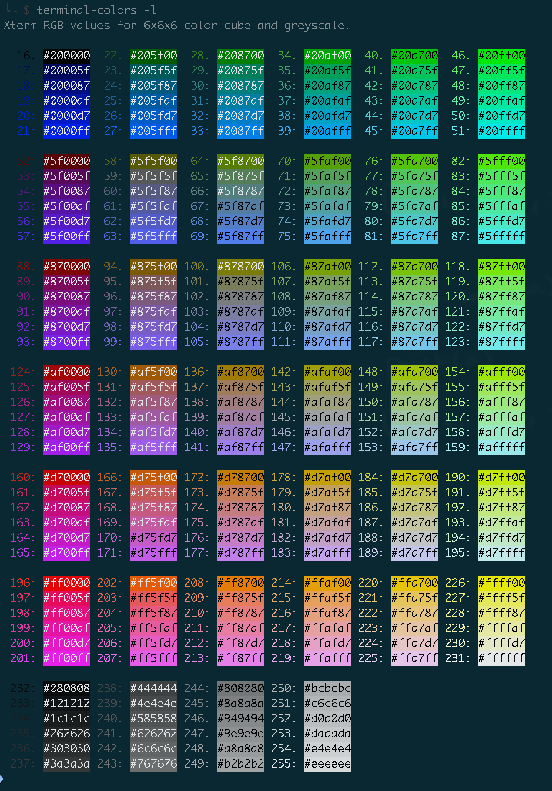

Table of Contents generated with DocToc
shadowsocks service
CentOS
basic environment
$ sudo yum install python-setuptools && sudo easy_install pip
$ sudo yum install epel-release
$ sudo yum install libsodium # for aes-256-gcm
$ sudo yum -y groupinstall "Development Tools"
$ sudo yum -y install python3-pip # optional
$ sudo -H python3 -m pip install --upgrade pip
git
$ sudo bash -c "cat > /etc/yum.repos.d/wandisco-git.repo" << EOF
[wandisco-git]
name=Wandisco GIT Repository
baseurl=http://opensource.wandisco.com/centos/7/git/\$basearch/
enabled=1
gpgcheck=1
gpgkey=http://opensource.wandisco.com/RPM-GPG-KEY-WANdisco
EOF
$ sudo rpm --import http://opensource.wandisco.com/RPM-GPG-KEY-WANdisco
$ sudo yum install -y git
- or nhahv/install_git2.x_on_centos.md
$ sudo yum install http://opensource.wandisco.com/centos/6/git/x86_64/wandisco-git-release-6-1.noarch.rpm $ sudo yum install -y git
copy artical content from csdn
- download html to local
- remove auto-switch to homepage function in html
<div style="display:none;"> <img src="https://blog.csdn.net/su2231595742/article/details/124182312" onerror="setTimeout(function(){if(!/(csdn.net|iteye.com|baiducontent.com|googleusercontent.com|360webcache.com|sogoucdn.com|bingj.com|baidu.com)$/.test(window.location.hostname)){window.location.href="\x68\x74\x74\x70\x73\x3a\x2f\x2f\x77\x77\x77\x2e\x63\x73\x64\x6e\x2e\x6e\x65\x74"}},3000);"> </div>- or
<div style="display:none;"> <img src="https://blog.csdn.net/potato123232/article/details/118926834" onerror="setTimeout(function(){if(!/(csdn.net|iteye.com|baiducontent.com|googleusercontent.com|360webcache.com|sogoucdn.com|bingj.com|baidu.com)$/.test(window.location.hostname)){window.location.href="\x68\x74\x74\x70\x73\x3a\x2f\x2f\x77\x77\x77\x2e\x63\x73\x64\x6e\x2e\x6e\x65\x74"}},3000);"> </div>
- or
- remove all
*.js( and might be all*.css) - open the html in MS Word
bingo!
color picker
iterm2-tab-set
- installation
$ npm i iterm2-tab-set usage
$ tabset --pick
1.11.3.7.1 -- tabset --pick function cpick () { if test tabset; then rgb=$(tabset -p | sed -nr "s:.*rgb\(([^)]+)\).*$:\1:p"); hexc=$(for c in $(echo "${rgb}" | sed -re 's:,: :g'); do printf '%02x' "$c"; done); echo -e """\t$rgb ~~> $hexc"""; fi }- result
$ cpick 125,199,53 ~~> 7dc735
- result
terminal-colors
install
$ python3 -m pip install terminal-colorsusage
$ terminal-colors -l 1.11.3.7.2 -- terminal-colors
256 Foreground and Background Colors - Full Chart
| Code | Description |
|---|---|
| 0 | black |
| 1 | red |
| 2 | green |
| 3 | yellow |
| 4 | blue |
| 5 | magenta |
| 6 | cyan |
| 7 | light_gray |
| 8 | dark_gray |
| 9 | light_red |
| 10 | light_green |
| 11 | light_yellow |
| 12 | light_blue |
| 13 | light_magenta |
| 14 | light_cyan |
| 15 | white |
| 16 | grey_0 |
| 17 | navy_blue |
| 18 | dark_blue |
| 19 | blue_3a |
| 20 | blue_3b |
| 21 | blue_1 |
| 22 | dark_green |
| 23 | deep_sky_blue_4a |
| 24 | deep_sky_blue_4b |
| 25 | deep_sky_blue_4c |
| 26 | dodger_blue_3 |
| 27 | dodger_blue_2 |
| 28 | green_4 |
| 29 | spring_green_4 |
| 30 | turquoise_4 |
| 31 | deep_sky_blue_3a |
| 32 | deep_sky_blue_3b |
| 33 | dodger_blue_1 |
| 34 | green_3a |
| 35 | spring_green_3a |
| 36 | dark_cyan |
| 37 | light_sea_green |
| 38 | deep_sky_blue_2 |
| 39 | deep_sky_blue_1 |
| 40 | green_3b |
| 41 | spring_green_3b |
| 42 | spring_green_2a |
| 43 | cyan_3 |
| 44 | dark_turquoise |
| 45 | turquoise_2 |
| 46 | green_1 |
| 47 | spring_green_2b |
| 48 | spring_green_1 |
| 49 | medium_spring_green |
| 50 | cyan_2 |
| 51 | cyan_1 |
| 52 | dark_red_1 |
| 53 | deep_pink_4a |
| 54 | purple_4a |
| 55 | purple_4b |
| 56 | purple_3 |
| 57 | blue_violet |
| 58 | orange_4a |
| 59 | grey_37 |
| 60 | medium_purple_4 |
| 61 | slate_blue_3a |
| 62 | slate_blue_3b |
| 63 | royal_blue_1 |
| 64 | chartreuse_4 |
| 65 | dark_sea_green_4a |
| 66 | pale_turquoise_4 |
| 67 | steel_blue |
| 68 | steel_blue_3 |
| 69 | cornflower_blue |
| 70 | chartreuse_3a |
| 71 | dark_sea_green_4b |
| 72 | cadet_blue_2 |
| 73 | cadet_blue_1 |
| 74 | sky_blue_3 |
| 75 | steel_blue_1a |
| 76 | chartreuse_3b |
| 77 | pale_green_3a |
| 78 | sea_green_3 |
| 79 | aquamarine_3 |
| 80 | medium_turquoise |
| 81 | steel_blue_1b |
| 82 | chartreuse_2a |
| 83 | sea_green_2 |
| 84 | sea_green_1a |
| 85 | sea_green_1b |
| 86 | aquamarine_1a |
| 87 | dark_slate_gray_2 |
| 88 | dark_red_2 |
| 89 | deep_pink_4b |
| 90 | dark_magenta_1 |
| 91 | dark_magenta_2 |
| 92 | dark_violet_1a |
| 93 | purple_1a |
| 94 | orange_4b |
| 95 | light_pink_4 |
| 96 | plum_4 |
| 97 | medium_purple_3a |
| 98 | medium_purple_3b |
| 99 | slate_blue_1 |
| 100 | yellow_4a |
| 101 | wheat_4 |
| 102 | grey_53 |
| 103 | light_slate_grey |
| 104 | medium_purple |
| 105 | light_slate_blue |
| 106 | yellow_4b |
| 107 | dark_olive_green_3a |
| 108 | dark_green_sea |
| 109 | light_sky_blue_3a |
| 110 | light_sky_blue_3b |
| 111 | sky_blue_2 |
| 112 | chartreuse_2b |
| 113 | dark_olive_green_3b |
| 114 | pale_green_3b |
| 115 | dark_sea_green_3a |
| 116 | dark_slate_gray_3 |
| 117 | sky_blue_1 |
| 118 | chartreuse_1 |
| 119 | light_green_2 |
| 120 | light_green_3 |
| 121 | pale_green_1a |
| 122 | aquamarine_1b |
| 123 | dark_slate_gray_1 |
| 124 | red_3a |
| 125 | deep_pink_4c |
| 126 | medium_violet_red |
| 127 | magenta_3a |
| 128 | dark_violet_1b |
| 129 | purple_1b |
| 130 | dark_orange_3a |
| 131 | indian_red_1a |
| 132 | hot_pink_3a |
| 133 | medium_orchid_3 |
| 134 | medium_orchid |
| 135 | medium_purple_2a |
| 136 | dark_goldenrod |
| 137 | light_salmon_3a |
| 138 | rosy_brown |
| 139 | grey_63 |
| 140 | medium_purple_2b |
| 141 | medium_purple_1 |
| 142 | gold_3a |
| 143 | dark_khaki |
| 144 | navajo_white_3 |
| 145 | grey_69 |
| 146 | light_steel_blue_3 |
| 147 | light_steel_blue |
| 148 | yellow_3a |
| 149 | dark_olive_green_3 |
| 150 | dark_sea_green_3b |
| 151 | dark_sea_green_2 |
| 152 | light_cyan_3 |
| 153 | light_sky_blue_1 |
| 154 | green_yellow |
| 155 | dark_olive_green_2 |
| 156 | pale_green_1b |
| 157 | dark_sea_green_5b |
| 158 | dark_sea_green_5a |
| 159 | pale_turquoise_1 |
| 160 | red_3b |
| 161 | deep_pink_3a |
| 162 | deep_pink_3b |
| 163 | magenta_3b |
| 164 | magenta_3c |
| 165 | magenta_2a |
| 166 | dark_orange_3b |
| 167 | indian_red_1b |
| 168 | hot_pink_3b |
| 169 | hot_pink_2 |
| 170 | orchid |
| 171 | medium_orchid_1a |
| 172 | orange_3 |
| 173 | light_salmon_3b |
| 174 | light_pink_3 |
| 175 | pink_3 |
| 176 | plum_3 |
| 177 | violet |
| 178 | gold_3b |
| 179 | light_goldenrod_3 |
| 180 | tan |
| 181 | misty_rose_3 |
| 182 | thistle_3 |
| 183 | plum_2 |
| 184 | yellow_3b |
| 185 | khaki_3 |
| 186 | light_goldenrod_2a |
| 187 | light_yellow_3 |
| 188 | grey_84 |
| 189 | light_steel_blue_1 |
| 190 | yellow_2 |
| 191 | dark_olive_green_1a |
| 192 | dark_olive_green_1b |
| 193 | dark_sea_green_1 |
| 194 | honeydew_2 |
| 195 | light_cyan_1 |
| 196 | red_1 |
| 197 | deep_pink_2 |
| 198 | deep_pink_1a |
| 199 | deep_pink_1b |
| 200 | magenta_2b |
| 201 | magenta_1 |
| 202 | orange_red_1 |
| 203 | indian_red_1c |
| 204 | indian_red_1d |
| 205 | hot_pink_1a |
| 206 | hot_pink_1b |
| 207 | medium_orchid_1b |
| 208 | dark_orange |
| 209 | salmon_1 |
| 210 | light_coral |
| 211 | pale_violet_red_1 |
| 212 | orchid_2 |
| 213 | orchid_1 |
| 214 | orange_1 |
| 215 | sandy_brown |
| 216 | light_salmon_1 |
| 217 | light_pink_1 |
| 218 | pink_1 |
| 219 | plum_1 |
| 220 | gold_1 |
| 221 | light_goldenrod_2b |
| 222 | light_goldenrod_2c |
| 223 | navajo_white_1 |
| 224 | misty_rose1 |
| 225 | thistle_1 |
| 226 | yellow_1 |
| 227 | light_goldenrod_1 |
| 228 | khaki_1 |
| 229 | wheat_1 |
| 230 | cornsilk_1 |
| 231 | grey_100 |
| 232 | grey_3 |
| 233 | grey_7 |
| 234 | grey_11 |
| 235 | grey_15 |
| 236 | grey_19 |
| 237 | grey_23 |
| 238 | grey_27 |
| 239 | grey_30 |
| 240 | grey_35 |
| 241 | grey_39 |
| 242 | grey_42 |
| 243 | grey_46 |
| 244 | grey_50 |
| 245 | grey_54 |
| 246 | grey_58 |
| 247 | grey_62 |
| 248 | grey_66 |
| 249 | grey_70 |
| 250 | grey_74 |
| 251 | grey_78 |
| 252 | grey_82 |
| 253 | grey_85 |
| 254 | grey_89 |
| 255 | grey_93 |
| 256 | default |